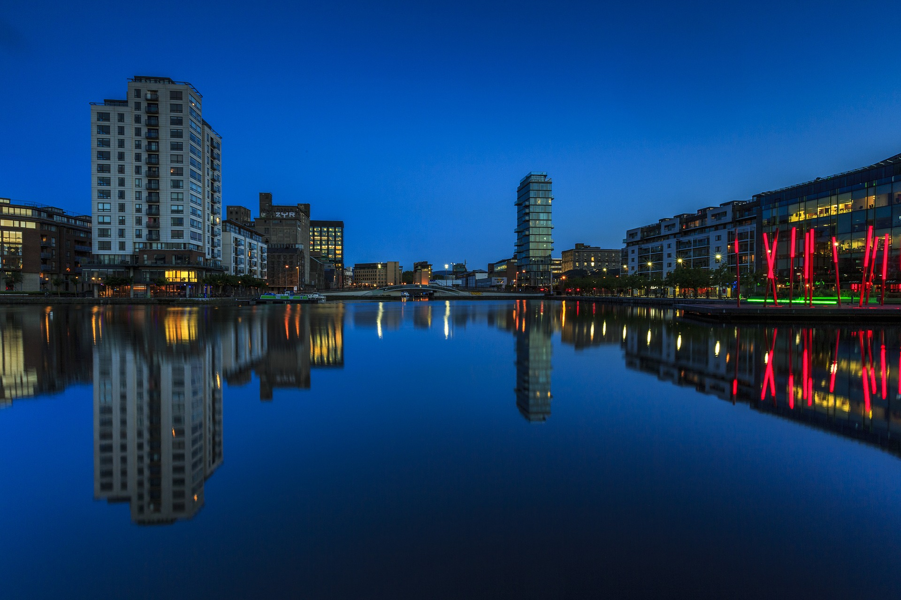

Travel Agentur
Paris

Daily Variety reported the two veteran film actors will take on lead roles in the Paul Schrader-helmed production that focuses on a former Nazi collaborator who later becomes the head of an asylum. Adapted by screenwriter Noah Stollman from Yoram Kaniuk’s novel of the same name, “Resurrected” will also be produced by EMS/3L head Werner Wirsing. Filming on the production, which will feature Ulf Israel as executive producer, […]
London
Daily Variety reported the two veteran film actors will take on lead roles in the Paul Schrader-helmed production that focuses on a former Nazi collaborator who later becomes the head of an asylum. Adapted by screenwriter Noah Stollman from Yoram Kaniuk’s novel of the same name, “Resurrected” will also be produced by EMS/3L head Werner Wirsing. Filming on the production, which will feature Ulf Israel as executive producer, […]
Dublin

Daily Variety reported the two veteran film actors will take on lead roles in the Paul Schrader-helmed production that focuses on a former Nazi collaborator who later becomes the head of an asylum. Adapted by screenwriter Noah Stollman from Yoram Kaniuk’s novel of the same name, “Resurrected” will also be produced by EMS/3L head Werner Wirsing. Filming on the production, which will feature Ulf Israel as executive producer, […]
Vienna
Daily Variety reported the two veteran film actors will take on lead roles in the Paul Schrader-helmed production that focuses on a former Nazi collaborator who later becomes the head of an asylum. Adapted by screenwriter Noah Stollman from Yoram Kaniuk’s novel of the same name, “Resurrected” will also be produced by EMS/3L head Werner Wirsing. Filming on the production, which will feature Ulf Israel as executive producer, […]
Nevada Southern Railroad Museum
- Dafoe, Goldblum set to be ‘Resurrected’
- Opening Harrods sale an ‘honor’
- Kid Rock among mourners at Ertegun funeral
- Boris Johnson accused of ‘lies and hype’ as Tories turn on Foreign Secretary over Brexit claims
- Vienna gets its first Bitcoin digital currency ‘bank’